WELCOME TO
KANGRA VALLEY
INTRODUCTION
Maharana Pratap Sagar also known as Pong Reservoir or Pong Dam Lake was created in 1975, by building the highest earthfill dam in India on the Beas River in the wetland zone of the Siwalik Hills of the Kangra district of the state of Himachal Pradesh.
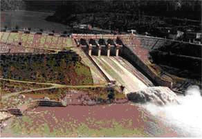 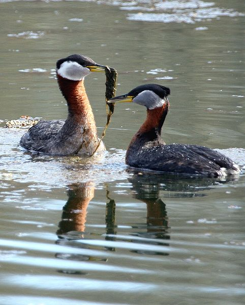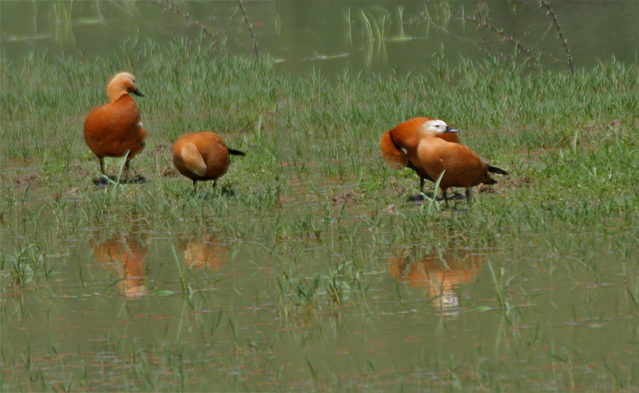
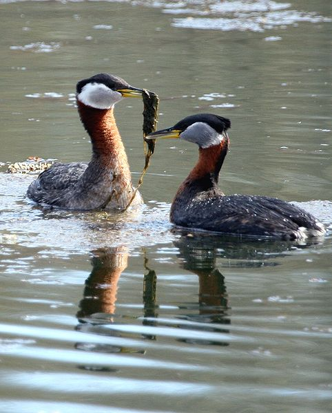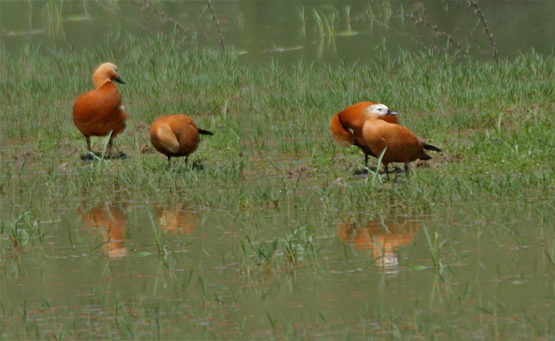 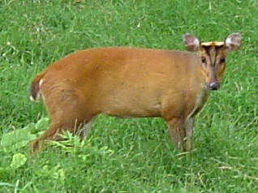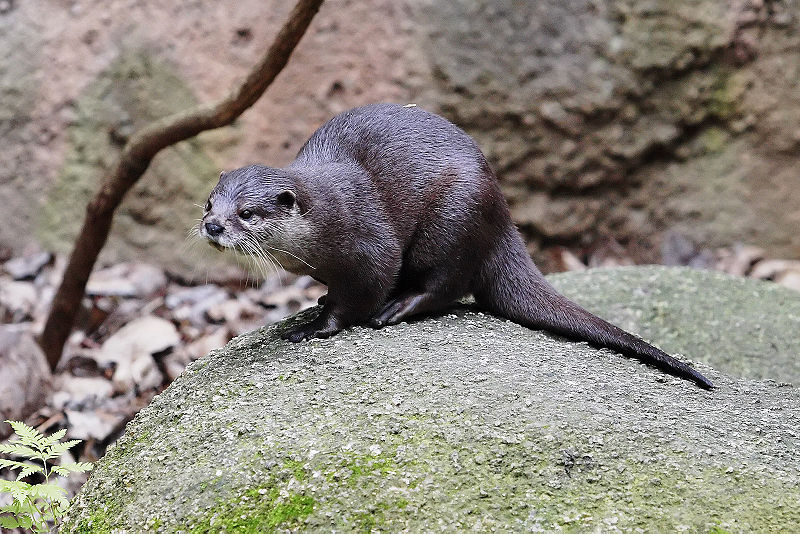
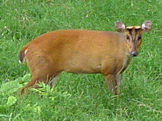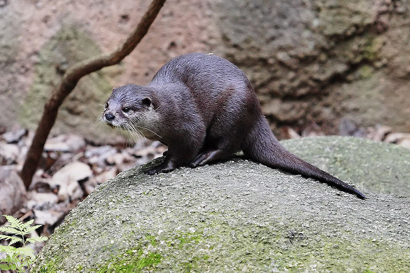
 LOCATION
The closest railway stations to the project are Mukerian, at 30 km (18.6 mi), and Pathankot, at 32 km (19.9 mi). Nagrota Surian and Jawali, located on the periphery of the reservoir, are connected by a narrow gauge railway line, on the Kangra railway line, which connects Pathankot to Jogindernagar.
Hydrology and engineering features
Flora and Fauna
LOCATION
The closest railway stations to the project are Mukerian, at 30 km (18.6 mi), and Pathankot, at 32 km (19.9 mi). Nagrota Surian and Jawali, located on the periphery of the reservoir, are connected by a narrow gauge railway line, on the Kangra railway line, which connects Pathankot to Jogindernagar.
Hydrology and engineering features
Flora and Fauna
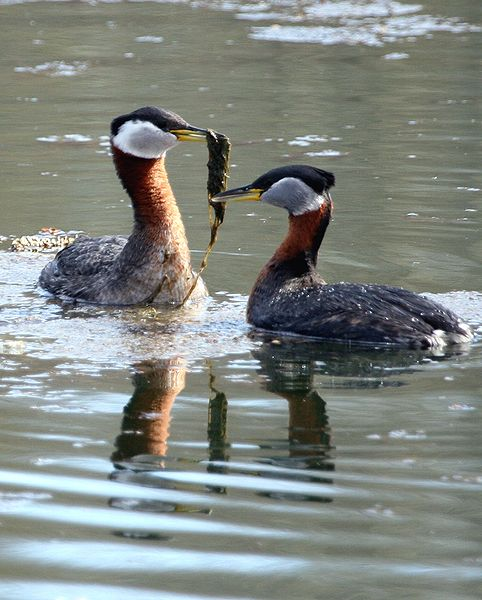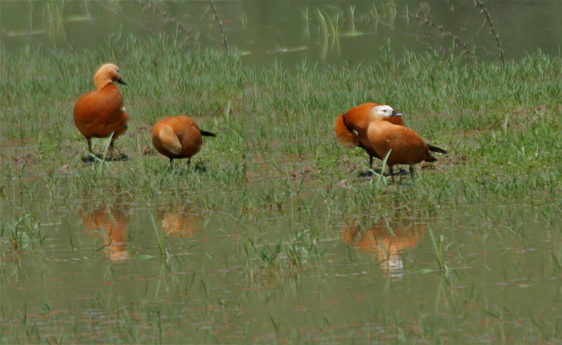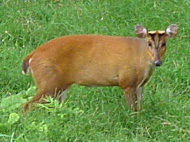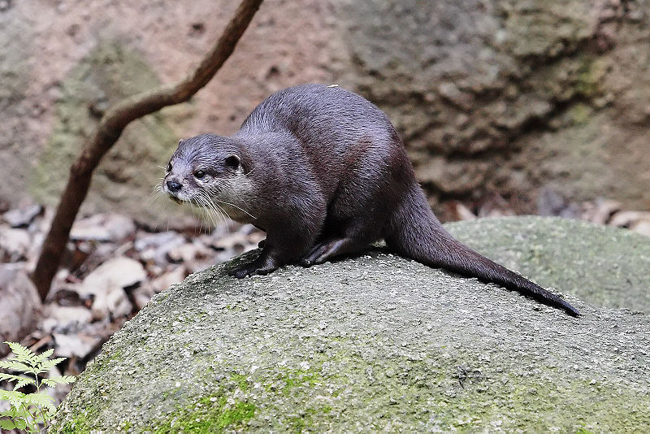